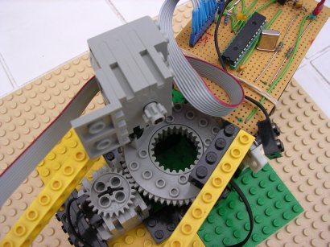
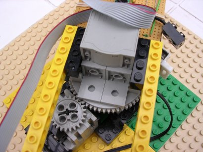
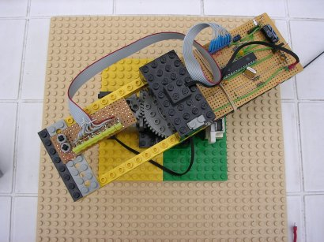
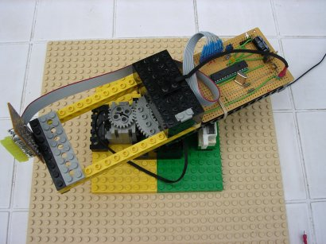
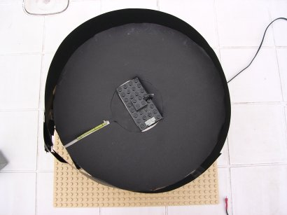
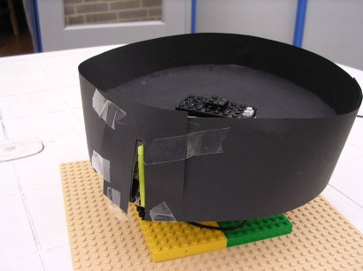
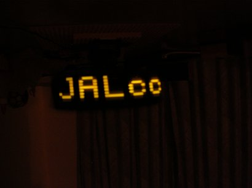
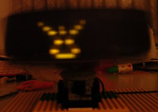

Propellor Clock
Introduction
Seeing some beatiful examples, this seemed to be a nice holliday project for me and my kids (10,14).
To get some idea, here are the significant examples:
The "orginal" by Bob Blick (1996): Propeller Clock
The JAL version of Thomas Dobbelaere: * Magische boodschap *
The LEGO version of Andy: Andy's Personal Page
Some beatiful examples (especially see the last movi): untitled
The future device from Kris: ...
Some suggestions
When starting with such a device, as we did (with some low brightness diffuse LEDs), it's difficult to track down the problems. So here are some suggestions to get started more easily.
Mechanical Construction
Here you can see the first mechanical construction. The motor at the bottom is driving the rotating arm, while the second motor on the arm is used as a generator, to supply power to the PIC. Although this seems a nice solution to transfer power over the rotating construction, and it also works, it's not advisable. When the LEDs are on, the power drawn from the generator is so high that the torque is too high. It will destroy the motor at the bottom.

So in second instance we decided to simply place a battery box on the moving arm.
On the left the LEDs are lying down, which is the way to start (you can see the whole display field).
On the right the LEDs are standing up, which is the final state and gives the best (undistorted) display.

By mounting black paper as a background, the visibility improves significant.

The speed with this configuration is about 250 .. 300 rpm. Too slow to make a nice movie, but fast enough to get a good visual picture.
And here some static pictures
 
Electronic circuit
The electronic circuit is very straight forward. You can take a smaller PIC, we've taken a 16F876 because it has a nice bootloader, so (re-)programming the device is very convenient.
If you want to get the power from a motor acting as generator, it's better to replace the diode + voltage regulator by a 5V1 zener diode.
A very dimmed LED is handy to check if the polarity is right (with the Lego connnectors you cann't determine the polarity from the connector).
Software
For the PIC program we used JAL. The data to be displayed is placed in the data-eeprom, so even with small PICs (that cann't hold a bootloader) it's possible to change the text/graphics to be displayed without reprogramming the PIC.
Tools
character /graphics generator
DataBooter
Other Links